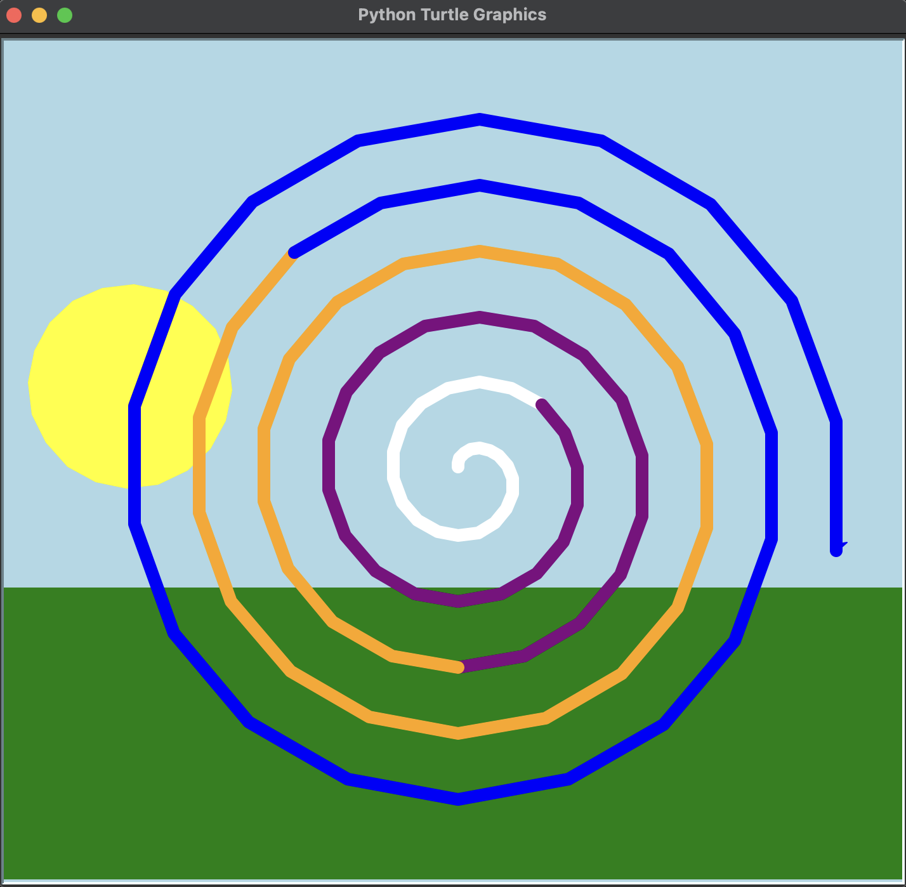

This was the first project that I completed for this class. It was a simple drawing created using the turtle package and while I have taken other CS classes at UO, it was the first time I had used the package. The purpose of this project was to get familiar with coding and making an object draw a simple scene. I learned how to use different packages which helped me involve them with future projects. Overall, it was a great introduction to web development and I am excited to continue my Computer Science development.

The image above is the final product of my first project. It was a simple drawing that animated the turtle package to draw a unique scene. For mine, I decided that I wanted it to be a simple scene that draws the grass, adds a sun and rotates it, and then finally creates a multi-colored spiral in the center. I was really happy with how it turned out and it was a great way to get familiar with coding and using different packages.